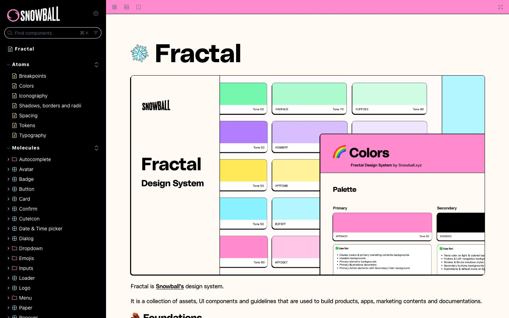

References / Website / 32
Fractal design system documentation
The Storybook documentation of Snowball’s Fractal design system.
- Source
- fractal.snowball.xyz
- Creator
- Snowball
- Made
- 2023–present
- Style
- Neo-brutalism (agent-proposed, not yet reviewed by a person)
- Moods
- Systematic, bright
- Evidence
- Captured with
tools/capture.mjs(headless Chrome, 1440 × 900) on 25 September 2026 and inspected. The screenshot shows the first viewport; the measurement covers up to four screens. - Reviewed
- Rights
- Third-party work, stored with credit for commentary. License: unverified. Rights policy
Observed
- A black sidebar lists components. A flat pink top bar spans the content area.
- The cover image shows swatch cards with black outlines and hard shadows in mint, violet, yellow, cyan, and pink.
- The documentation text sits on an off-white page with a heavy sans-serif title and plain body text.
Why it belongs
Measurement separates the system from its documentation shell: the style lives in the components and the cover art, not in the Storybook frame. This is a useful case for the rule that a reference must show the style, not only describe it.
Measured
Machine-extracted by tools/extract-traits.js on . Full measurement.
- Type families
- PolySans (100%)
- Median radius
- 1.5 px
- Mean chroma
- 0.05
- Palette
- #fffbf4 78%
- #000000 18%
- #ff8acd 3%
- #2e3338 1%
- #5c6570 0%

